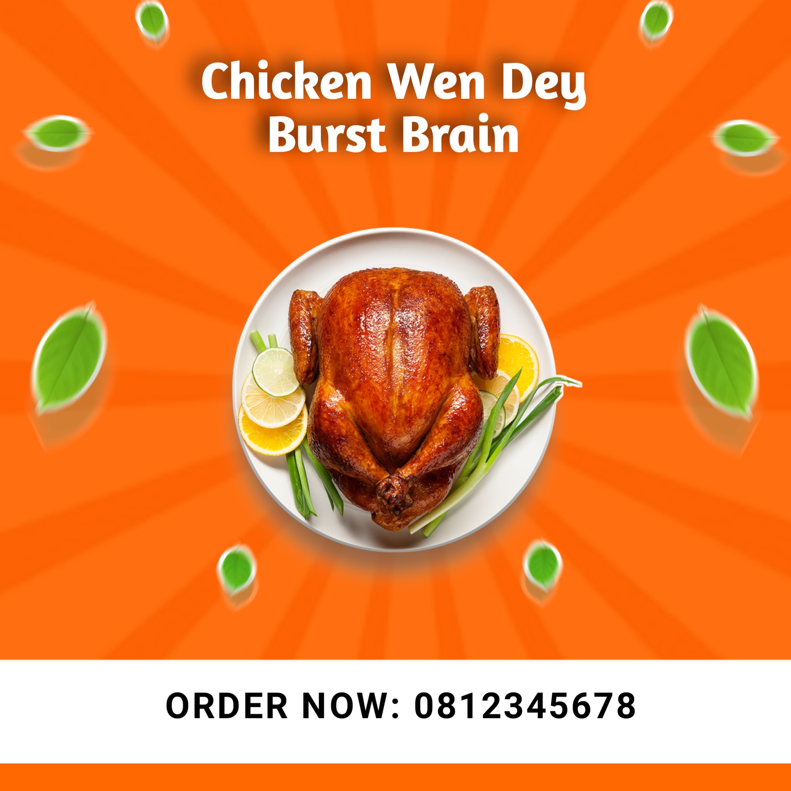

A hair salon owner needed a flyer design to publicize her business within her vicinity. She specifically wanted orange to be incorporated in the design, provided sample pictures and other information of the business for the design as well. She emphasized on the need for the business design to be captivating and have a lasting impression to prospective customers.
Software Workbench
PixelLab
Objectives
My main objective in designing this flyer for the client was to put up a design that would be captivating and would leave an impression to prospective customers, incorporating the client's preferred colour of choice, picture samples and business information. I also had to ensure that the business details were clearly visible and would complement the overall design.
Procedure
Firstly, I uploaded the sample pictures provided by the client to a website to remove their original background here. This was to make them easily manipulatable.
I created a blank environment on PixelLab and inserted the business title and motto.The font size was set at 48, font was 'Chunkfive' and colour in RGB (255, 103, 0) for the title whereas the motto had font size of 23, 'ABeeZee-Regular' for font type, font colour in RGB (255, 255, 255) and text background set as same colour of the title, left padding was at 30, right padding 32, top padding -4, bottom padding 2.
For the caption, 'OUR SERVICES', I inserted the text, using an 'ABeeZee-Regular' and activated the text background with colour in RBG as (18, 68, 16), left padding 2, right padding 2, top padding 2, bottom padding 2 and radius 7.
I created an orange background colour around the motto. Left padding was -1 and right padding, -3.
I inserted a rectangular shape, coloured it orange and set the sizes for width to 65% and height to 18%.
I added the sample images, set them to sizes of 17% for width and 16% for height and placed them on to the rectangular orange shape.
I added a semicircle, coloured it orange, duplicated it and placed both on the design, one at the top left and the other at the bottom right.
Finally, I added another image resized to a large size to fill the flyer. I reduced its transparency to 10% and placed it behind the other features, to act as the background.
The flyer was completed, and saved to be presented to the client.
The design was presented to the client as a picture (in jpg). It was met with commendation and satisfaction.
Follow-up
From the data provided by the client 2 months after the flyers were put up within her vicinity, it was estimated that patronage of the salon rose to about 18%. The average weekly patronage was 45 persons before the flyer installation and this number rose to about 53 persons and looks to increase even further.
2. Flyer Design for University campus food retailer

Task
A food merchant specializing in preparing fried and smoked chicken contracted me to design a flyer advertising his business on campus. He was just starting out and was into doing deliveries to clients. He wanted a simple design with an appealing caption, appropriate images and his business details apparent.
Software Workbench
PixelLab
Objectives
The objective was to design a flyer with a simple background, captivating title and pictures that relate to his business.
Procedure
Firstly, I downloaded the images;spirals, roasted chicken and the floating leaves from citypng.com. Then I removed their original background here.
I created an orange background with RBG (255, 103, 0).
I further proceeded to add a spiral image to enhance the background element. The image opacity was set to 5%, the width was 117% and the height 103%.
I included an image of a roast chicken of width 47%, height 51%, placed at the center from top to bottom, left to right. Two images of the same floating leaves of similar sizes were added around the chicken image, one was placed an angle of 28deg and the other -25deg.
I created a white rectangular shape and placed at the bottom of the design.
The design was completed and was presented to the client.
The project was presented to the client and was met with satisfaction.
Follow-up
The flyers helped the client increase awareness both offline and online among the student population on campus.